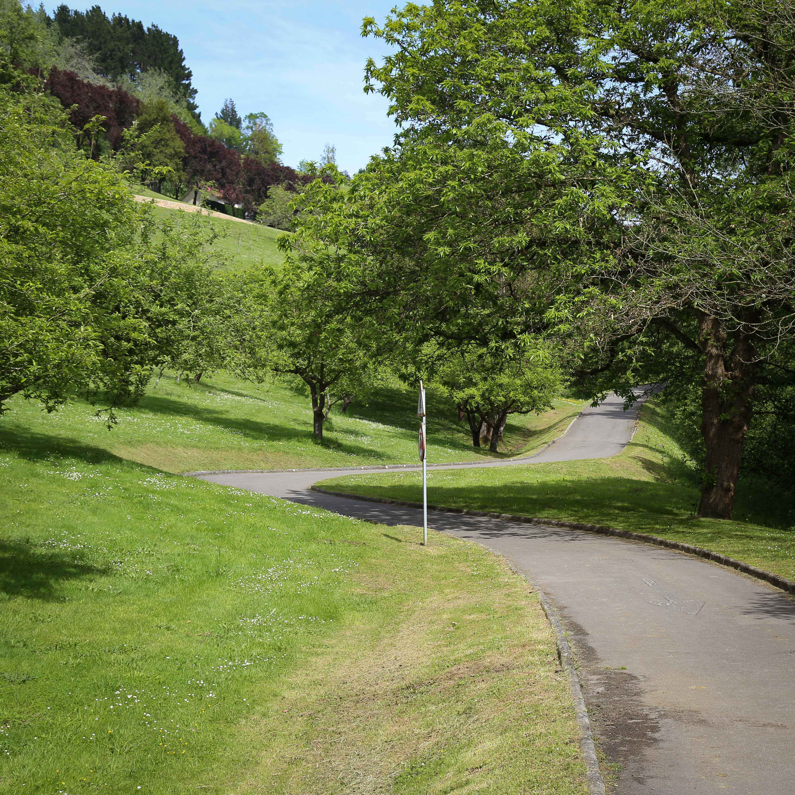
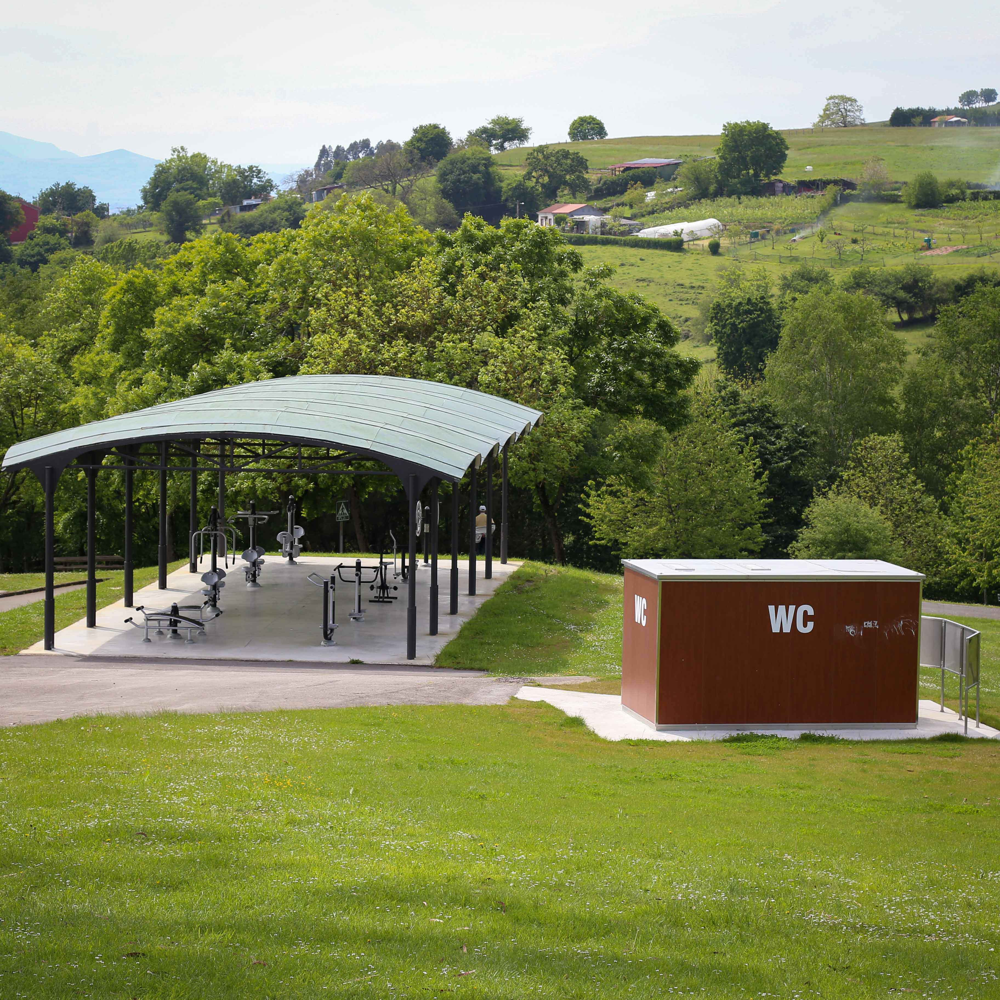
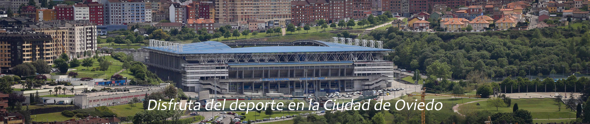
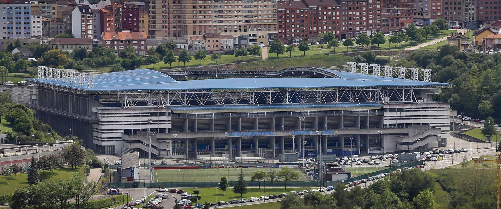
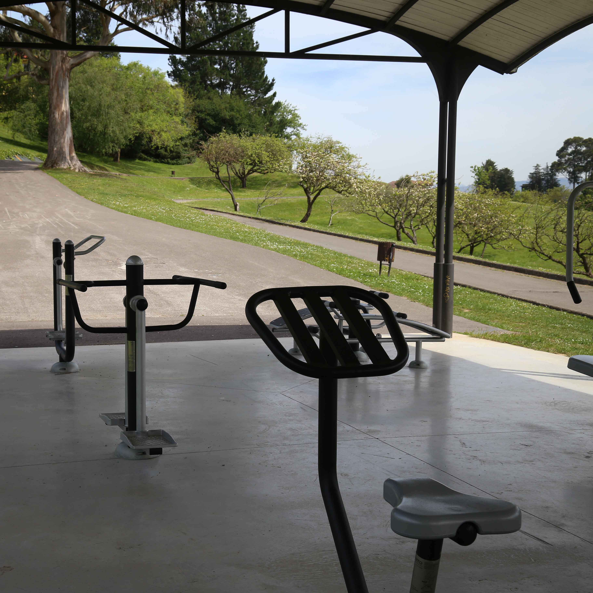
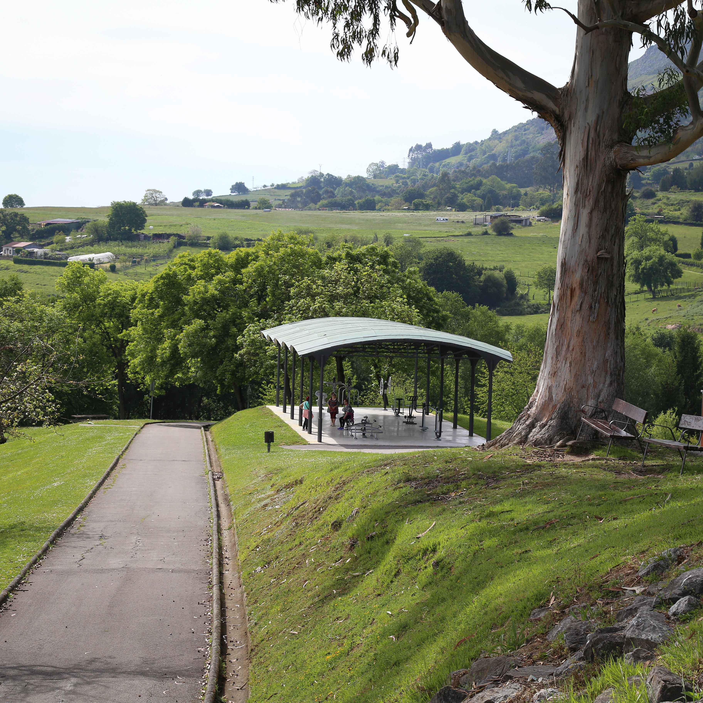

Vídeo del parque que ofrece una vista panorámica de 360º desde el punto de grabación.
Vídeo del parque con vista en 360º
El parque más grande de la ciudad de Oviedo.
 Parque "Purificación Tomás"
Parque "Purificación Tomás"
El parque Purificación Tomás es uno de los lugares ideales de la
ciudad para pasear, andar en bicicleta o realizar otras actividades al aire libre.
En él podrás encontrar | Senderismo | Baloncesto | Disc-Golf |
Un lugar ideal para disfrutar del deporte.


Un parque ideal para practicar deporte.
 Deporte en el Parque "Purificación Tomás"
Deporte en el Parque "Purificación Tomás"
En el Parque Purificación Tomás se pueden practicar deportes variados como baloncesto, senderismo, mountain-bike o disc-golf. Cuenta con rutas e instalaciones para practicar estos deportes, también cuenta con un gimnasio al aire libre.


Ejercicio físco al aire libre
 Ventajas:
Ventajas:
Realizar ejercicio al aire libre tiene múltiples beneficios que van más allá de mejorar el acondicionamiento físico, la actividad física en espacios al aire libre tiene un mayor impacto en el bienestar mental que la realizada en espacios cerrados.
Esto se debe a varios factores: luz solar, aire fresco, beneficioso para el cerebro, mayor adherencia a la práctica física, aumenta el gasto calórico y provoca lo un efecto biofilia.
Ejercicio físico al aire libre
 Recomendaciones:
Recomendaciones:
Para realizar ejercicio de forma segura, es recomendable tener en cuenta el clima, ropa térmica para el frío y protector solar y gafas de sol para los días de calor, sin olvidar que tanto el calor como el frío extremo pueden ser peligrosos.
Si vas a realizar deporte de noche o cerca de lugares por donde circulan coches, utiliza ropa que refleje, calienta antes de entrenar, evita los días en los que haya mucha contaminación y por último estira adecuadamente tras el ejercicio .


Inaugurado en 2014, se
convirtió en el
primer campo de dieciocho hoyos del país. Este campo ofrece una
experiencia única, combinando la mitad de los hoyos en áreas abiertas y
la otra
mitad en zonas boscosas. Club
Disc Golf - OVIEDO


Recinto polideportivo
al aire
libre y bajo techo, cuenta con una serie de máquinas homologadas con las
que se pueden realizar diferentes tipos de ejercicios físicos: tren superior, tren
inferior y cardio.


Cancha
reglamentaria
de baloncesto urbano, el campo de juego es un rectángulo de dimensiones 28 m x
15
m medidos desde el borde interior de las líneas que lo delimitan.

Espacio verde activo.
 DISFRUTA DEL DEPORTE AL AIRE LIBRE
DISFRUTA DEL DEPORTE AL AIRE LIBRE
Practicar deporte es fundamental para mantener una buena salud física y mental, ya que ayuda a prevenir enfermedades, mejora tu estado de ánimo y aumenta la energía diaria, hacerlo al aire libre ayuda a eliminar el estrés, mejora los estados de ánimos y brinda la sensación de libertad que usualmente no se tiene en un cuarto cerrado.
Explora y Disfruta
 Rutas y Actividades en Purificación Tomás
Rutas y Actividades en Purificación Tomás
Este parque ofrece varias
sendas y rutas que permiten disfrutar de la naturaleza y de vistas
espectaculares del Naranco y de la Sierra del Aramo:
1-Senda Circular del Parque.
2-Ruta hacia el Monte Naranco.
3-Sendero de la Finca Monte Altu.
Sobre Nosotros
Somos un equipo de desarrolladores web dedicados a crear experiencias únicas.
Nos
esforzamos por transformar la visita a los parques por excelencia de Oviedo en experiencias
digitales visualmente atractivas, intuitivas y fáciles de usar.
© Copyright 2024.
Todos lo derechos reservados.